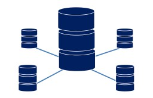
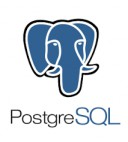
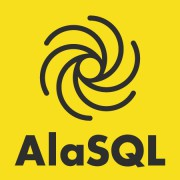

Meteor + Other Databases
Meteor can be intergrated with any different types of databases like distributed databases, graph databases, relational databases. Initially, Meteor supported only MongoDB as backing database and this affected all implementations of stack. Eventually, it was understood that Meteor needs support for other databases. After a lot of internal design discussions on various aspects to enhance the components and efficiency of Meteor Framework, they found a way to build prototypes. Here, we are going to see some of those.
But, before going into that, we should know how Meteor database layes are organized. Meteor server is the chief support to the Meteor architecture. When an application starts, Meteor server connects to MongoDB instance by itself and to track changes in MongoDB database, Meteor uses oplog-tailing. Meteor also has an in-memory database called Minimongo, which uses client code as proxy for server and database. Metatore runs smoothly as it has two database layers that bring in another database architecture.
PostgreSQL is the first full-stack relatinoal database SQL prototype by Meteor that has been given support as a database. Implementation of new features for this database is still in progress but at present, it supports the basic operations. Here are some steps to create database, collections and tables.
Checkout the PostgreSQL-Meteor integration Tutorial page for more details.
Neo4j is an efficient graph database to map relationships. Meteor can be connected to Neo4j database and access REST API either locally or deploy it with GrapheneDB. There are many packages for meteor but ccorcos:neo4j seems to be easy to use because it is light weight and does not depend on Mongo. To run queries on the server, you should instantiate the database and use Neo4j.query.
Checkout the Neo4j-Meteor integration Tutorial page for more details.
RethinkDB, a distributed database, is supported by meteor smart package. This database queries runs faster by avoiding live results sets and database polling. A wondeful ReQL syntax can be written on both client and server by having Minirethink on client and RethinkDB on server. It's implementation is still under progress and currently supports different types of cursors like each, map, fetch, count, and hasNext. Here are a few steps to create tables and publishing the tables on server side.
Checkout the RethinkDB-Meteor integration Tutorial page for more details.
As a concept of integrating another relational database into the architecture of meteor, Oracle is developed in such a way that the meteor applications are written in the same way as they are written for mongodb. Using Oracle.collection instead of Mongo.collection is the only difference and all the other code remains the same. The driver automatically creates and maintains all the tables and their indexes. Also, database triggers are populated automatically whenever a new collection is created. Here are some SQL commands in Oracle database that can be used with Meteor.
Checkout the Oracle-Meteor integration Tutorial page for more details.

Querying in AlaSQL is very similar to querying in SQL. One of the enhancements of Meteor is that it provides support for AlaSQL which works both on client side and server side. This database does the operations like JOIN, GROUP-BY, UNION, DISTINCT, etc. Here are a few example queries of AlaSQL written for Meteor.
Checkout the AlaSQL-Meteor integration Tutorial page for more details.